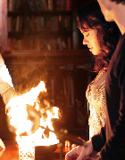

Episode 10 - THE SACRIFICE

JEREMY MAKES A DANGEROUS MISTAKE - Elena (Nina Dobrev) decides solve her
problems by herself and offers a tempting proposal to Rose (Lauren Cohan)
to help her. When the things take an unexpected way, Rose calls Damon (Ian
Somerhalder) to handle with the Elena's plan and start doing it. Jeremy
(Steven R. McQueen) tries impudently help Bonnie (Katerina Graham) to recover
the lunarian, life-threatening and forcing Stefan (Paul Wesley) to do it too.
Bonnie and Luka (Bryton James) come closer. Tyler (Michael Trevino) shows to
Caroline (Candice Accola) the old Lockwood's basemend, where she does a discovery
that let both of them terrified. Directed by Ralph Hemecker, wirtten by Caroline
Dries.
Go to GUIDE SECOND SEASON